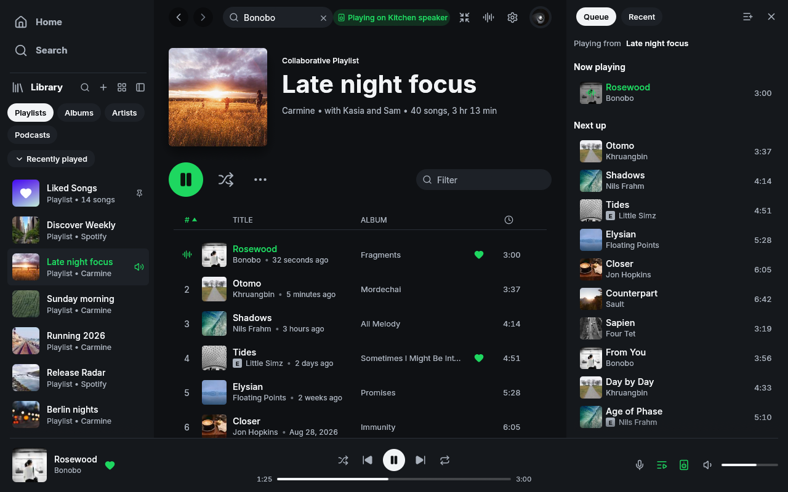

Windows x64, inherited Spotifast UI at 995c768. No redesign. Demo sample data and Picsum artwork. The narrow queue layout has clipping and overlapping controls. MilkDrop is a separate native child capture, without real playback.
